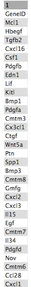

Visualization of RNA-Seq results with Volcano Plot
 Maria Doyle
Maria DoyleOverview
Questions:Objectives:
How to generate a volcano plot from RNA-seq data?
Requirements:
Create a volcano plot of RNA-seq data to visualize significant genes
- Introduction to Galaxy Analyses
- Sequence analysis
- Quality Control: slides slides - tutorial hands-on
- Mapping: slides slides - tutorial hands-on
- Transcriptomics
- 2: RNA-seq counts to genes: tutorial hands-on
Time estimation: 30 minutesLevel: Introductory IntroductorySupporting Materials:Last modification: Jun 14, 2021
 Questions:
Questions:
Introduction
 Volcano plots are commonly used to display the results of RNA-seq or other omics experiments. A volcano plot is a type of scatterplot that shows statistical significance (P value) versus magnitude of change (fold change). It enables quick visual identification of genes with large fold changes that are also statistically significant. These may be the most biologically significant genes. In a volcano plot, the most upregulated genes are towards the right, the most downregulated genes are towards the left, and the most statistically significant genes are towards the top.
Volcano plots are commonly used to display the results of RNA-seq or other omics experiments. A volcano plot is a type of scatterplot that shows statistical significance (P value) versus magnitude of change (fold change). It enables quick visual identification of genes with large fold changes that are also statistically significant. These may be the most biologically significant genes. In a volcano plot, the most upregulated genes are towards the right, the most downregulated genes are towards the left, and the most statistically significant genes are towards the top.
To generate a volcano plot of RNA-seq results, we need a file of differentially expressed results which is provided for you here. To generate this file yourself, see the RNA-seq counts to genes tutorial. The file used here was generated from limma-voom but you could use a file from any RNA-seq differential expression tool, such as edgeR or DESeq2, as long as it has the required columns (see below).
The data for this tutorial comes from Fu et al. 2015. This study examined the expression profiles of basal and luminal cells in the mammary gland of virgin, pregnant and lactating mice. Here we will visualize the results of the luminal pregnant vs lactating comparison.
Agenda
In this tutorial, we will deal with:
Preparing the inputs
We will use two files for this analysis:
- Differentially expressed results file (genes in rows, and 4 required columns: raw P values, adjusted P values (FDR), log fold change and gene labels)
- Genes of interest file (list of genes to be plotted in volcano)
Import data
hands_on Hands-on: Data upload
Create a new history for this RNA-seq exercise e.g.
Volcano plotTip: Creating a new history
Click the new-history icon at the top of the history panel.
If the new-history is missing:
- Click on the galaxy-gear icon (History options) on the top of the history panel
- Select the option Create New from the menu
Tip: Renaming a history
- Click on Unnamed history (or the current name of the history) (Click to rename history) at the top of your history panel
- Type the new name
- Press Enter
Import the differentially results table.
To import the file, there are two options:
- Option 1: From a shared data library if available (ask your instructor)
- Option 2: From Zenodo
Tip: Importing via links
- Copy the link location
Open the Galaxy Upload Manager (galaxy-upload on the top-right of the tool panel)
- Select Paste/Fetch Data
Paste the link into the text field
Press Start
Close the window
- By default, Galaxy uses the URL as the name, so rename the files with a more useful name.
Tip: Importing data from a data library
As an alternative to uploading the data from a URL or your computer, the files may also have been made available from a shared data library:
- Go into Shared data (top panel) then Data libraries
- Navigate to the correct folder as indicated by your instructor
- Select the desired files
- Click on the To History button near the top and select as Datasets from the dropdown menu
- In the pop-up window, select the history you want to import the files to (or create a new one)
- Click on Import
You can paste the links below into the Paste/Fetch box:
https://zenodo.org/record/2529117/files/limma-voom_luminalpregnant-luminallactate https://zenodo.org/record/2529117/files/volcano_genesSelect “Type”:
tabularAfter the files import, check that the datatype is
tabular. If the datatype is nottabular, please change the file type totabular.Tip: Changing the datatype
- Click on the galaxy-pencil pencil icon for the dataset to edit its attributes
- In the central panel, click on the galaxy-chart-select-data Datatypes tab on the top
- Select
tabular- Click the Save button
Click on the galaxy-eye (eye) icon and take a look at the limma-voom file. It should look like below, with 8 columns.

Create volcano plot highlighting significant genes
First we will create a volcano plot highlighting all significant genes. We will call genes significant here if they have FDR < 0.01 and a log fold change of 0.58 (equivalent to a fold-change of 1.5). These were the values used in the original paper for this dataset.
hands_on Hands-on: Create a Volcano plot
- Volcano Plot Tool: toolshed.g2.bx.psu.edu/repos/iuc/volcanoplot/volcanoplot/0.0.5 to create a volcano plot
- param-file “Specify an input file”: limma-voom file
- param-select “FDR (adjusted P value)”:
Column 8- param-select “P value (raw)”:
Column 7- param-select “Log Fold Change”:
Column 4- param-select “Labels”:
Column 2- param-text “Significance threshold”:
0.01- param-text “LogFC threshold to colour”:
0.58- param-select “Points to label”:
None
In the plot above the genes are coloured if they pass the thresholds for FDR and Log Fold Change, red if they are upregulated and blue if they are downregulated. You can see in this plot that there are many (hundreds) of significant genes in this dataset.
question Question
Why does the y axis use a negative P value scale?
solution Solution
The negative log of the P values are used for the y axis so that the smallest P values (most significant) are at the top of the plot.
Create volcano plot labelling top significant genes
You can also choose to show the labels (e.g. Gene Symbols) for the significant genes with this volcano plot tool. You can select to label all significant or just the top genes. The top genes are those that pass the FDR and logFC thresholds that have the smallest P values. As there are hundreds of significant genes here, too many to sensibly label, let’s label the top 10 genes.
hands_on Hands-on: Create a Volcano plot labelling top genes
- Use the Rerun galaxy-refresh button in the History to rerun Volcano Plot tool with the same parameters as before except:
- param-select “Points to label”:
Significant
- param-text “Only label top most significant”:
10

As in the previous plot, genes are coloured if they pass the thresholds for FDR and Log Fold Change, (red for upregulated and blue for downregulated) and the top genes by P value are labelled. Note that in the plot above we can now easily see what the top genes are by P value and also which of them have bigger fold changes.
question Question
Which gene is the most statistically significant with large fold change?
solution Solution
Csn1s2b, as it is the gene nearest the top of the plot and it is also far to the left. This gene is a calcium-sensitive casein that is important in milk production. As this dataset compares lactating and pregnant mice, it makes sense that it is a gene that is very differentially expressed.
Create volcano plot labelling genes of interest
We can also label one or more genes of interest in a volcano plot. This enables us to visualize where these genes are in terms of significance and in comparison to the other genes. In the original paper using this dataset, there is a heatmap of 31 genes in Figure 6b (see the tutorial here if you would like to see how to generate the heatmap). These genes are a set of 30 cytokines/growth factor identified as differentially expressed, and the authors’ main gene of interest, Mcl1. These genes are provided in the volcano_genes file and shown below. We will label these genes in the volcano plot. We’ll add boxes around the labels to highlight the gene names.

hands_on Hands-on: Create a Volcano plot labelling genes of interest
- Use the Rerun galaxy-refresh button in the History to rerun Volcano Plot tool with the same parameters as before except:
- param-select “Points to label”:
Input from file
- param-file “File of labels”: volcano genes file
- In “Plot Options”:
- param-check “Label Boxes”:
Yes

question Question
- How many of the genes of interest are significant?
Which gene of interest is the most statistically significant?
solution Solution
- 29/31 are significant, the genes not in the grey area.
- The Egf gene is the most statistically significant as it is nearest the top of the plot.
As in the previous plots, genes are coloured if they pass the thresholds for FDR and Log Fold Change. Here all the genes of interest are significant (red or blue) except for two genes, Mcl1 and Gmfg. Gmfg, has an FDR just very slightly outside the significance threshold we used of 0.01 (0.0105). Mcl1 is the authors’ gene of interest and they showed that while it’s expression did increase at the protein level, it did not increase at the transcription level, as we can see here, suggesting it is regulated post-transcriptionally.
tip Tip: R code
You can get the R code used to generate the plot under Output Options in the tool form. You can edit this code in R if you want to customise the plot. See the Visualization of RNA-Seq results with Volcano Plot in R tutorial for how to do this.
Conclusion
In this tutorial we have seen how a volcano plot can be generated from RNA-seq data and used to quickly visualize significant genes.
Key points
A volcano plot can be used to quickly visualize significant genes in RNA-seq results
Frequently Asked Questions
Have questions about this tutorial? Check out the FAQ page for the Transcriptomics topic to see if your question is listed there. If not, please ask your question on the GTN Gitter Channel or the Galaxy Help ForumUseful literature
Further information, including links to documentation and original publications, regarding the tools, analysis techniques and the interpretation of results described in this tutorial can be found here.
References
- Fu, N. Y., A. C. Rios, B. Pal, R. Soetanto, A. T. L. Lun et al., 2015 EGF-mediated induction of Mcl-1 at the switch to lactation is essential for alveolar cell survival. Nature Cell Biology 17: 365–375. 10.1038/ncb3117
Feedback
Did you use this material as an instructor? Feel free to give us feedback on how it went.

Citing this Tutorial
- Maria Doyle, 2021 Visualization of RNA-Seq results with Volcano Plot (Galaxy Training Materials). https://training.galaxyproject.org/training-material/topics/transcriptomics/tutorials/rna-seq-viz-with-volcanoplot/tutorial.html Online; accessed TODAY
- Batut et al., 2018 Community-Driven Data Analysis Training for Biology Cell Systems 10.1016/j.cels.2018.05.012
details BibTeX
@misc{transcriptomics-rna-seq-viz-with-volcanoplot, author = "Maria Doyle", title = "Visualization of RNA-Seq results with Volcano Plot (Galaxy Training Materials)", year = "2021", month = "06", day = "14" url = "\url{https://training.galaxyproject.org/training-material/topics/transcriptomics/tutorials/rna-seq-viz-with-volcanoplot/tutorial.html}", note = "[Online; accessed TODAY]" } @article{Batut_2018, doi = {10.1016/j.cels.2018.05.012}, url = {https://doi.org/10.1016%2Fj.cels.2018.05.012}, year = 2018, month = {jun}, publisher = {Elsevier {BV}}, volume = {6}, number = {6}, pages = {752--758.e1}, author = {B{\'{e}}r{\'{e}}nice Batut and Saskia Hiltemann and Andrea Bagnacani and Dannon Baker and Vivek Bhardwaj and Clemens Blank and Anthony Bretaudeau and Loraine Brillet-Gu{\'{e}}guen and Martin {\v{C}}ech and John Chilton and Dave Clements and Olivia Doppelt-Azeroual and Anika Erxleben and Mallory Ann Freeberg and Simon Gladman and Youri Hoogstrate and Hans-Rudolf Hotz and Torsten Houwaart and Pratik Jagtap and Delphine Larivi{\`{e}}re and Gildas Le Corguill{\'{e}} and Thomas Manke and Fabien Mareuil and Fidel Ram{\'{\i}}rez and Devon Ryan and Florian Christoph Sigloch and Nicola Soranzo and Joachim Wolff and Pavankumar Videm and Markus Wolfien and Aisanjiang Wubuli and Dilmurat Yusuf and James Taylor and Rolf Backofen and Anton Nekrutenko and Björn Grüning}, title = {Community-Driven Data Analysis Training for Biology}, journal = {Cell Systems} }
Congratulations on successfully completing this tutorial!
Do you want to extend your knowledge? Follow one of our recommended follow-up trainings:
- Transcriptomics
- Visualization of RNA-Seq results with Volcano Plot in R: tutorial hands-on